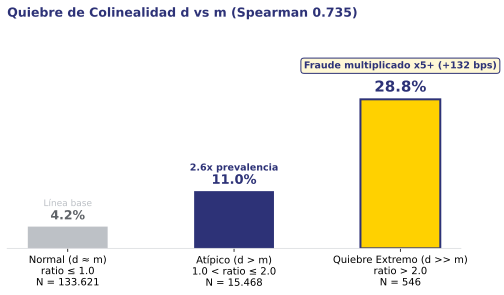
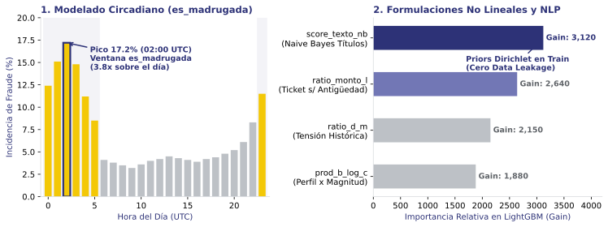
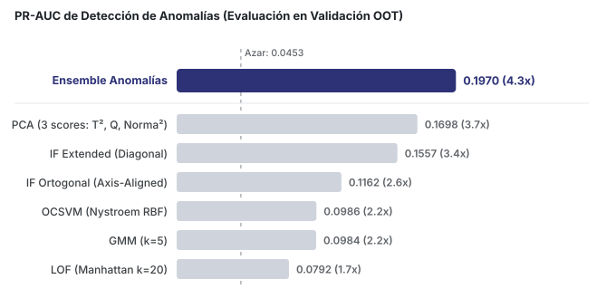
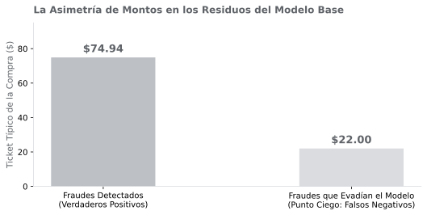
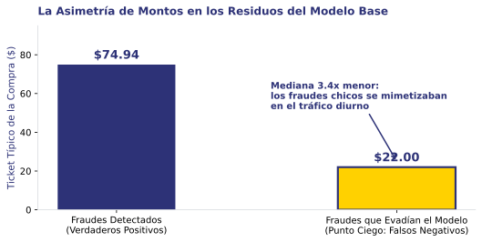
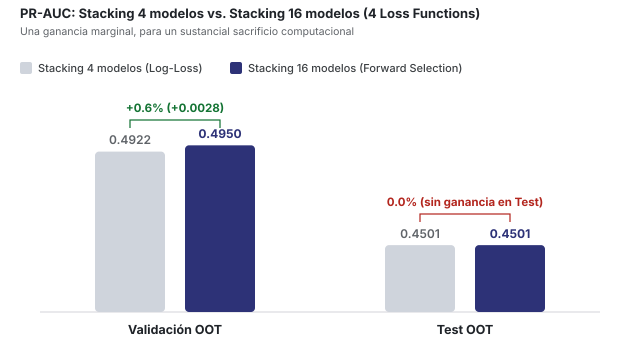
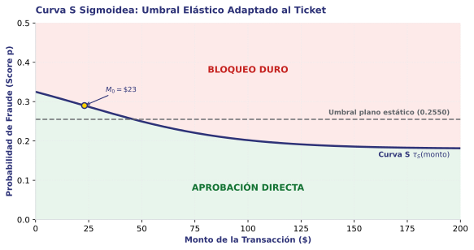
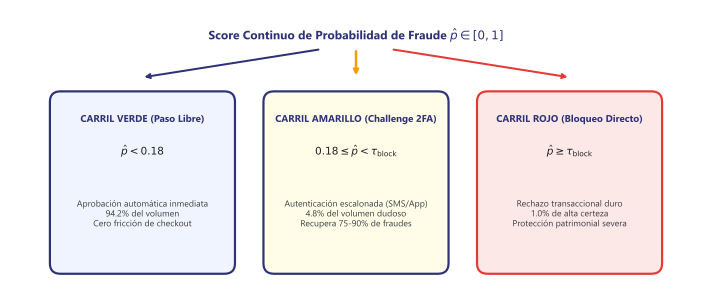

De probabilidades continuas a decisiones financieras en pasarelas de pago.
Tomás Saldías
Feature Engineering & Umbrales
Franco Esterellas
Detección de Anomalías & Ensambles
Ian Connon
Modelado Supervisado & MLOps
+195.8 bps
$63.4k salvados
Récord OOT: supera la barrera de 0.4500 sin sobreajuste.
Impacto: rescata $19.2k adicionales frente al corte estático.
Evaluación fuera de muestra out-of-time (OOT) sobre 22.500 casos de Test (16 a 21 de abril).
2. SELECCIÓN DE VARIABLES & RATIOS
Poda de Ruido
-78% descartado (k=2)
Salto en Validación
+130.0 bps sin sobreajuste

| Grupo | Variables Núcleo | Impacto Directo |
|---|---|---|
| Nativas (4) | b, c, d, m | Núcleo de comportamiento |
| Ratios (3) | ratio_monto_l, ratio_monto_e, ratio_d_m | Gain 9.330 (#1) y +132 bps |
| Complejas (4) | es_madrugada, score_texto_nb, prod_b_log_c, is_h_cero | Circadiano, NLP y no lineal |
Monto relativo: ratio_monto_l (Gain 9.330) y ratio_monto_e reemplazan al monto plano descartado.
Quiebre d vs m: d y m correlacionan 0.735; al quebrarse, el fraude se multiplica hasta casi 7x (+132 bps).
Forward Selection con paciencia k=2; correlación d vs m (Spearman 0.735) y explosión atípica evaluada en 150.000 transacciones.
3. VARIABLES CLAVE

| Segmento prod_b_log_c | Fraude | Lift |
|---|---|---|
| Prevalencia diurna base | 4.1% | 1.0x |
| b > 0.8 & c < 1000 (+91 bps) | 12.8% | 3.1x |
Ventana circadiana (es_madrugada): fraude trepa a 17.2% a las 02:00 UTC (3.8x prevalencia).
NLP Bayesiano (score_texto_nb): 5.000 términos Dirichlet OOF; alcanza 24.5% fraude en top 1% (5.4x).
Priors bayesianos y normalizaciones ajustados estrictamente en Train para evitar cualquier data leakage.
4. ANOMALÍAS & REGLAS

+413 bps sobre Isolation Forest puro (0.1557) • 4.3x azar
One-Class puro: Isolation Forest, PCA y LOF entrenados sobre legítimos detectan anomalías sin etiquetas.
10 Reglas CARs (WRAcc): minería de patrones de alto riesgo que enriquecen el Stacking.
Validación OOT temporal; ensamble no supervisado combina Isolation Forest, PCA y LOF con meta-regresión logística.
5. AUDITORÍA DE RESIDUOS


| Fraude Digital Rescatado | Ticket | Mediana | Déficit |
|---|---|---|---|
| PSN Plus 14D (Ps4) | $0.40 | $14.41 | 97% |
| Spotify Premium Oficial | $2.22 | $25.61 | 91% |
| The Sims 4 / GTA 5 | $2.50 | $18.00 | 87% |
| Desbloqueo Fiat Palio | $1.89 | $19.55 | 90% |
Punto ciego: fraudes detectados promediaban $98 (mediana $75); los escapados tenían mediana de $22.76.
Solución semántica: clustering (k=50) fija precios de referencia (+44 bps Val, +61 bps Test).
Auditoría en validación OOT; variables aprobadas: deficit_piso_cluster (+19 bps) y distancia_log_cluster (+25 bps).
6. STACKING & RÉCORD
Champion Oficial de Protocolo
Lasso C=0.20 sobre LightGBM, CatBoost, RF y XGBoost
Test OOT
Validación OOT
Cero test-snooping: mejor modelo congelado a ciegas; supera 0.4500 en Test.
Hallazgo de Parsimonia L1
Regularización C=0.10 apaga coeficientes redundantes
Récord Test OOT
+195.8 bps (+1.96% PR-AUC)
Validación OOT
-11 bps (-0.11%, menos optimismo)
Récord del taller: mayor regularización elimina colinealidad y alcanza 79.9% de recupero.
Metamodelo Nivel 1 evaluado sobre 22.500 transacciones de Test OOT; parsimonia L1 elimina colinealidad entre árboles.
7. ABLACIÓN MULTI-LOSS

Frente a +0.6% (+3 milésimas) en Validación
16 candidatos (4 pérdidas): modelos optimizados con Log-Loss, Weighted, Focal y Reranker.
Descarte por parsimonia: Forward Selection retiene 5 modelos pero no supera al cuatri-modelo.
Ablación en Validación y Test OOT (22.500 transacciones); modelo de 16 candidatos omitido por parsimonia al no generalizar en Test.
8. CURVA S (BACKEND)

| Segmento | Umbral τ | Lógica Financiera |
|---|---|---|
| Tickets altos (>$100) | 0.18 | Cerrojo estricto para capital |
| Tickets bajos (<$15) | 0.40 | No quemar cupo en compras chicas |
Elasticidad al ticket: modula tau en sigmoide decreciente centrada en M0=$23 con sigma=35.
+$6.744 netos rescatados: sube recupero al 64.1% respetando el cupo estricto de 504 bloqueos.
Parámetros sigmoideos: tau_max=0.40, tau_min=0.18, inflexión M0=$23.02, dispersión sigma=35 (504 FP en Test).
9. SEMÁFORO 2FA (CHECKOUT)

| Carril | Volumen | Mecanismo de Checkout |
|---|---|---|
| Verde | 94.2% | Paso limpio en 200 ms (sin fricción) |
| Amarillo | 4.8% | Reto WhatsApp/Push (~$0.05) beta=0.40 |
| Rojo | 1.0% | Bloqueo duro patrimonial ($25) |
Piso garantizado ($50.2k) ante colapso total del 2FA
Salto a 79.9%: rescata 199 fraudes extra ($63.4k) con reto WhatsApp acotado a 4.8%.
Resiliencia probada: soporta fallas en 5 escenarios y garantiza piso de 63.3% ante colapso.
Evaluación sobre 22.500 casos de Test con semáforo tripartito y fallback automático a Curva S.
10. PROPUESTA FINAL
Fase 1: Inmediata (Backend)
Inversión cero: rescata +$6.7k netos inmediatos en motor de reglas.
Fase 2: Expansión (Checkout)
Consolida 79.9% de recupero con menos de 94 bloqueos diarios.
Retorno Financiero Consolidado
Ahorro neto de $60.050 (-42.7% de costo)
| Bloqueos diarios Test: | < 94 FP / día |
| Error en legítimos: | 2.3% (97.7% limpio) |
| Aprobación Verde: | 200 ms instantáneo |